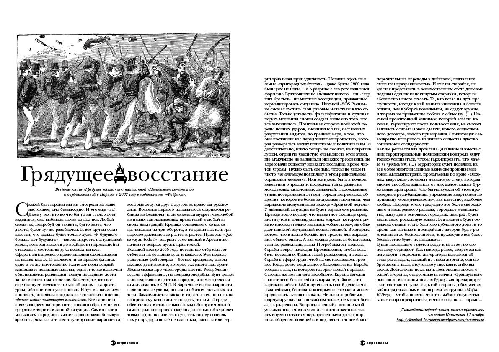

 |
|
ГРЯДУЩЕЕ ВОССТАНИЕ Введение книги «Грядущее восстание», написанной «Невидимым комитетом» и опубликованной в Париже в 2007 году в издательстве «Фабрика».
С какой бы стороны мы ни смотрели на наше настоящее, оно безвыходно. И это еще что! Даже у тех, кто во что бы то ни стало хочет надеяться, оно выбивает почву из под ног. Любой смельчак, попробуй он заявить, будто знает, что делать, будет тут же разоблачен. И все кругом соглашаются, что дальше будет только хуже. «У будущего больше нет будущего» – такова мудрость наступившей эпохи, которая кажется до крайности нормальной и отсылает к состоянию духа первых панков. Сфера политического представления схлопывается на наших глазах. И на левом, и на правом флангах одно и то же ничтожество занимает позы вождей или выдает невинные напевы, одни и те же выскочки обмениваются репликами, следуя последним достижениям своих пиар-отделов. Кажется, те, кто все еще голосует, мечтают только об одном – взорвать урны, ибо они голосуют против. И тут мы начинаем понимать, что люди продолжают голосовать именно против самого института голосования. Все варианты, появляющиеся на горизонте, никоим образом не могут удовлетворить в данной ситуации. Самим своим молчанием народ доказывает свою гораздо большую зрелость, чем все эти жестикулирующие марионетки, которые дерутся друг с другом за право им руководить. Возьмите первого попавшегося старика-магребинца из Бельвиля, и он окажется мудрее, чем любой из наших так называемых правителей в любой из своих деклараций. Крышка социального котла закручивается на три оборота, в то время как изнутри паровое давление все растет и растет. Призрак «Que se vayan todos!», впервые замеченный в Аргентине, начинает всерьез пугать правителей. Большой пожар 2005 года постоянно отбрасывает отблески на сознание всех и каждого. Эти первые радостные фейерверки – боевое крещение, открывающее десятилетие, которое так много нам сулит. Медиа-сказка про «пригороды против Республики» весьма эффективна, но неправдоподобна. Бунт дошел и до кварталов в центрах городов, что методически замалчивалось в СМИ. В Барселоне из солидарности палили целые улицы, но знали об этом только их жители. Замалчивается также и то, что с тех пор страна по-прежнему вспыхивает то здесь, то там. И среди обвиняемых в этих вспышках мы обнаружим людей самого разного происхождения, которых объединяет только одно: ненависть к существующему социальному порядку, а вовсе не классовая, расовая или территориальная принадлежность. Новизна здесь не в самих «пригородных бунтах» – даже бунты 1980 года были уже не новы, – а в разрыве с его устоявшимися формами. Бунтовщики не слушают никого – ни «старших братьев», ни местные ассоциации, призванные нормализировать ситуацию. Никакой «SOS Расизм» не сможет пустить свои раковые метастазы в это событие. Только усталость, фальсификация и круговая порука молчания смогли создать иллюзию того, что все закончилось. Позитивная сторона всей этой череды ночных ударов, анонимных атак, бессловных разрушений видится, по крайней мере, в том, что они поставили нас перед зияющей пропастью, которая разверзлась между политикой и политическим. И действительно, никто теперь не сможет, не покривив душой, отрицать увесистую очевидность этой атаки, где атакующие не выдвигали никаких требований, не адресовали обществу никакого послания, кроме чистой угрозы. Нужно быть слепым, чтобы не увидеть чисто политическую подоплеку в этом решительном отрицании политики. Или же нужно быть в полном неведении о тридцати последних годах развития молодежных автономных движений. Подожженные этими потерянными детьми, горели погремушки общества, которое не более заслуживает почтения, чем парижские монументы на исходе «Кровавой недели». У нынешней ситуации не будет социального решения. Прежде всего потому, что невнятное скопище сред, институтов и индивидуальных мирков, которое принято иносказательно называть «обществом», не обладает никакой внутренней консистенцией. Во-вторых, потому что в языке больше нет средств для выражения общего опыта. А как можно делиться богатством, если не разделяешь язык? Потребовалось полвека борьбы вокруг наследия Просвещения, чтобы ослабить потенциал Французской революции, и вековая борьба в сфере труда, чтоб на свет появилось грозное Государство социального благоденствия. Борьба создает язык, на котором говорит новый порядок. Сегодня же нет ничего подобного. Европа сегодня – континент без копейки в кармане, тайком затоваривающийся в Lidl и путешествующий дешевыми авиарейсами, благодаря которым он только и может продолжать путешествовать. Ни одна «проблема», формулируемая на социальном языке, не может быть здесь разрешена. Вопросы «пенсий», «социальной уязвимости», «молодежи» и ее «актов жестокости» неминуемо остаются неразрешенными до тех пор, пока общество полицейски подавляет эти все более поразительные переходы к действию, подталкиваемые их неразрешимостью. И как ни старайся, не удастся представить в величественном свете дешевые подачки одиноким покинутым старикам, которым абсолютно нечего сказать. Те, кто встал на путь преступности, находя в ней меньше унижения и больше отдачи, чем в уборке помещений, не сдадут оружие, и тюрьма не привьет им любовь к обществу. (…) Никакой прожиточный минимум, который власти, наконец, гарантируют после полувосстания, не сможет заложить основы Новой сделки, нового общественного договора, нового примирения. Слишком уж безвозвратно испарилось из нашего общества чувство социальной солидарности. Как же решается эта проблема? Давление и вместе с ним территориальный полицейский контроль будут только усиливаться, чтобы гарантировать, что ничего не произойдет. (…) Территория будет поделена на все более многочисленные взаимонепроницаемые зоны. Автомагистрали, пролагаемые по краю «сложных кварталов», возводят невидимую стену, которая вполне способна защитить от них малоэтажные буржуазные пригороды. Что бы ни думали об этом правоверные республиканцы, управление кварталами по принципу «коммунальности», как известно, наиболее удобно. Посреди этого грядущего все более сверкающего и изощренного распада, городское меньшинство, живущее в основных городских центрах, будет вести свою роскошную жизнь. Вся планета будет освещена огнями этого богатого публичного дома, в то время как спецназ и полицейские патрули будут размножаться до бесконечности, и правосудие все более бессовестно будет их покрывать. Тупик настоящего заметен везде и во всем, но его повсюду отрицают. Как никогда ранее, современные психологи, социологи, литераторы пытаются об этом рассуждать, каждый на своем жаргоне, однако бросается в глаза отсутствие у них каких-либо выводов. Достаточно послушать песнопения эпохи: с одной стороны, остроумные пустячки «французского шансона», в котором мелкая буржуазия препарирует свои состояния души, с другой стороны, объявления войны радикальными рэпперами из группы «Mafia K’1Fry», – чтобы понять, что это зыбкое сосуществование скоро прекратится, и что исход не за горами…
Дальнейший перевод книги можно прочитать на сайте Комитета 11 ноября |
|
|